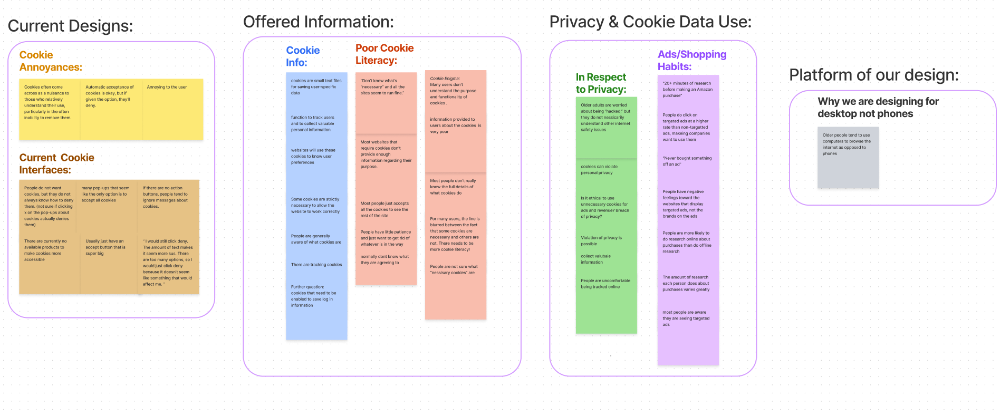
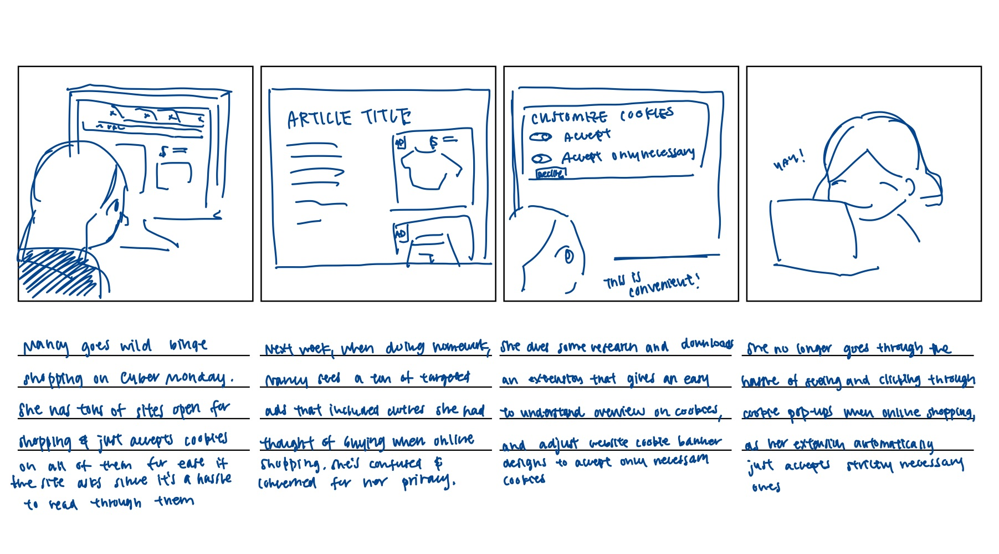
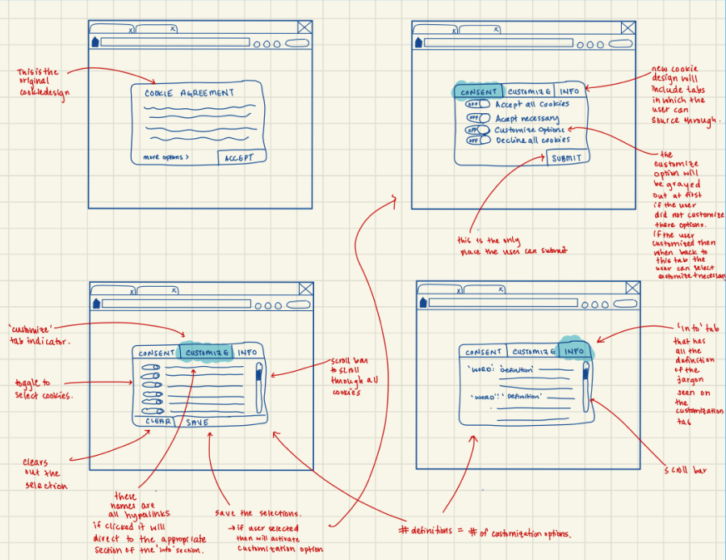
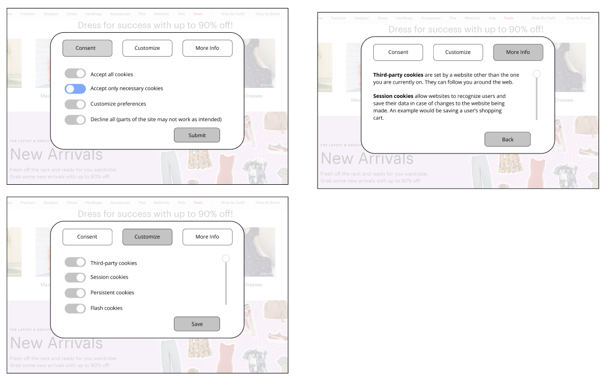
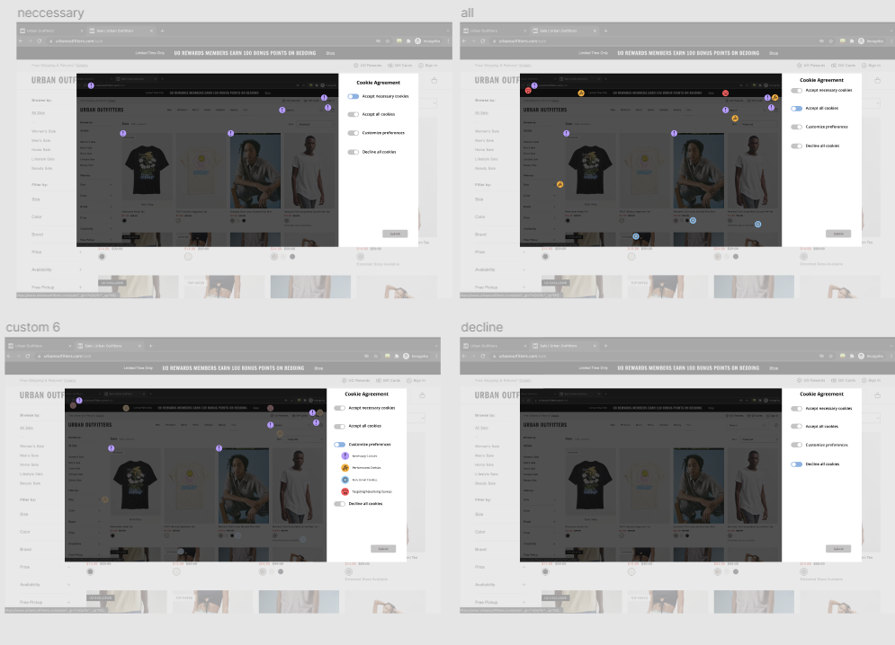

Spring 2022
Team Members: Nora Wai, Nicole Korber, Nish Nilakantan, Andres del Cid
Technologies: Figma
Jump to Final Product
Internet cookies banners are a common form of deceptive shopping practices. Many websites display a pop-up asking you to accept cookies to use the site, which enable tracking of your own personal data. These are often difficult to deny or know where your data is going, and influences heavily targeted ads.
We conducted research through collecting examples of cookies banners ourselves, learning about what exactly cookies do through secondary research, and
held three interviews to understand the general public's knowledge of and feelings about these banners.
These were our main takeaways:
We created an affinity diagram to synthesize our research and discover user pain points as well as opportunities.
We brainstormed scenarios users might be interacting with cookies, and how our redesigned cookie interaction might aim to help them. We focused on:
From this, we created a storyboard to guide our design decisions. We wanted to focus on ease of understanding cookie banners.
As we created wireframes and lo-fi prototypes, we wanted to focus on enabling the user to customize what cookies they could use, having brief explanations of cookies, and having equal emphasis on all accept/decline buttons.
 A problem with our lo-fi prototype was that there was still too much text that the user would need to parse through, so when creating our mid-fi prototype, we completely shifted our focus to a more visual way of displaying information. We represented cookies with icons that were colored depending on their category: necessary, functional, performance, and advertising. We allowed for customization by the user disabling certain categories, and the respective icons would show up based on what the user chose.

Building off our mid-fi prototype, we also added descriptions of what the cookies did when the user hovered over an
icon in the case the user wanted to be more informed about their decisions. We made the default option to "accept necessary cookies," and ensured
each option was given equal emphasis.
Try it Out!
During this unit, I learned about how much thought comes into creating a product catered specifically for the user, and how crucial it is to see and understand how the product works from the user’s perspective. Many will use design take advantage of a user’s lack of knowledge and priorities to deceive users to a business’s benefit, so it’s extremely important to understand the user’s motives, needs, and potential barriers so we can design something that is ethical and best suits their needs without conflict. I also saw how helpful getting constant feedback and going through multiple iterations was for our final product as we got to learn from new perspectives in structuring our design.